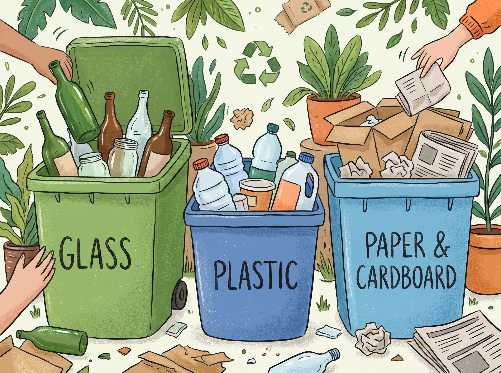
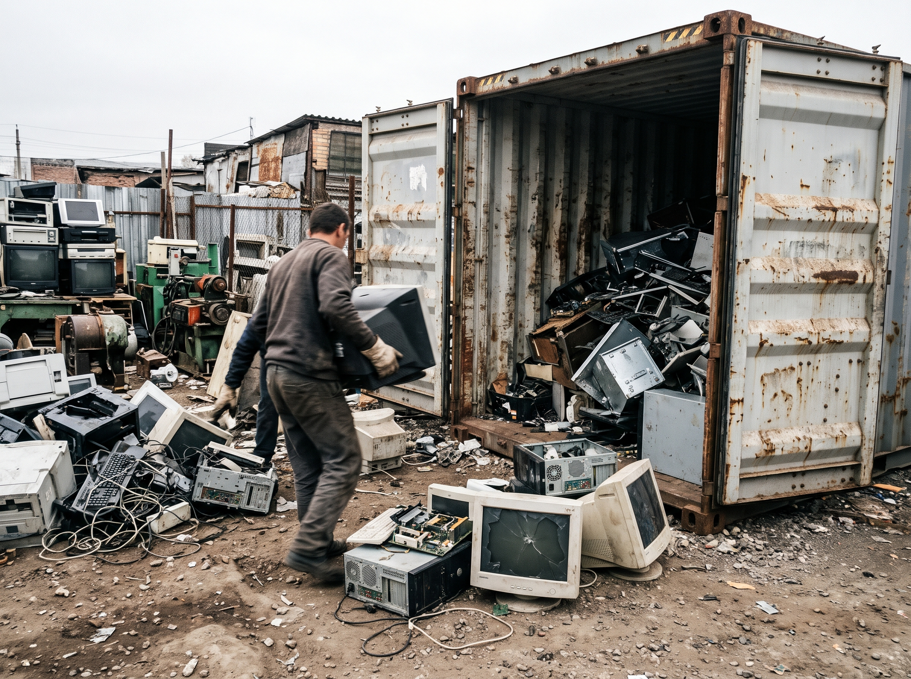
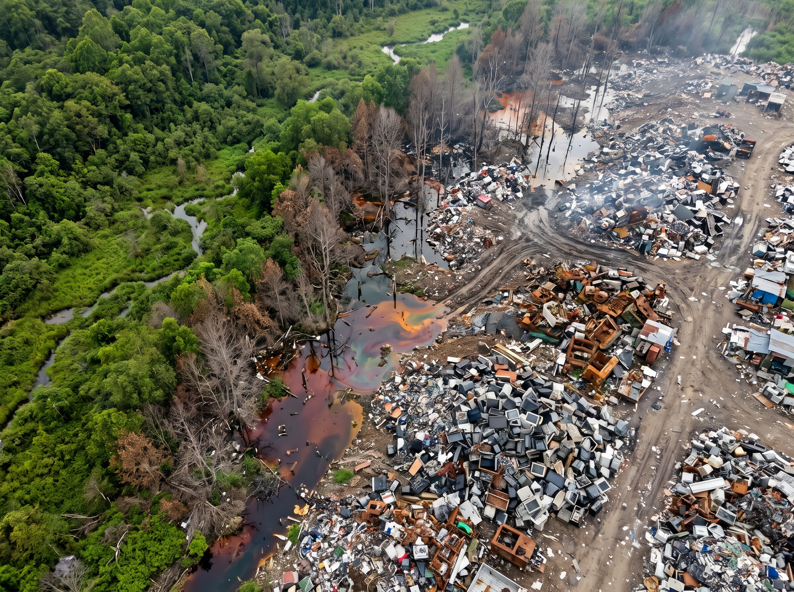
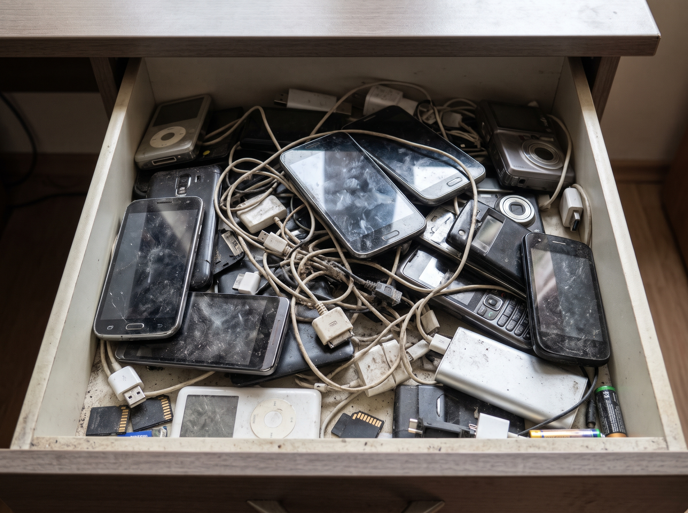
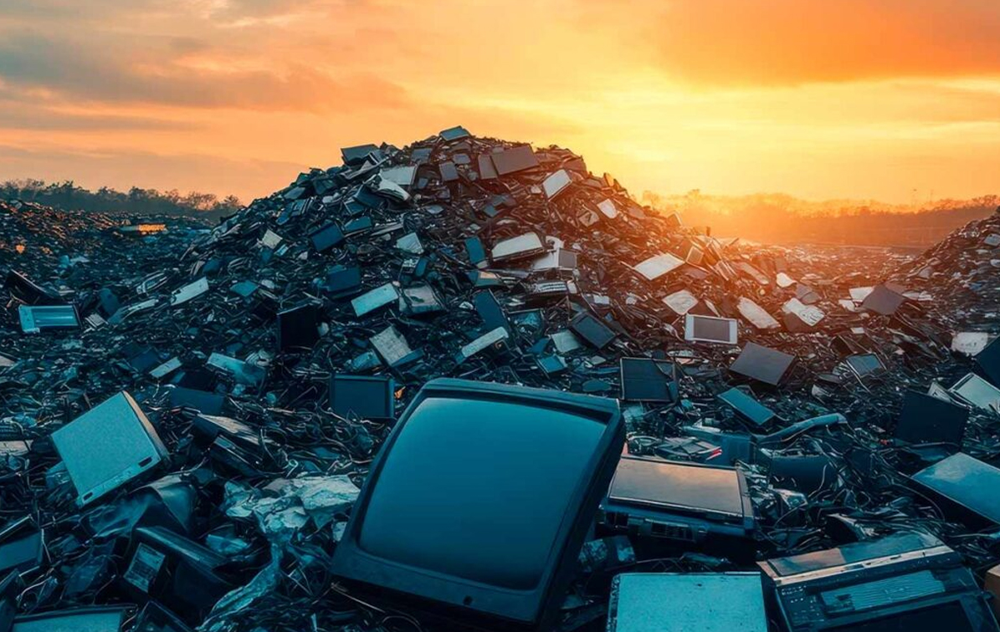

Quins materials es recuperen realment en reciclar?
S'exposa la ineficiència del reciclatge i es detalla com aquest és impulsat per uns pocs metalls valuosos.
Llegir mésLa gestió de dispositius electrònics representa un dels majors reptes ambientals contemporanis, atès que des de principis del segle XXI s'han venut aproximadament 35.000 milions de telèfons mòbils. Malgrat aquest immens volum, únicament el 22% dels aparells electrònics acaben en canals oficials i segurs de reciclatge.
Aquest blog neix per informar sobre la crisi oculta dels residus electrònics, abastant des del potencial dels telèfons inactius que acumulem a casa fins a les devastadores conseqüències del tràfic internacional il·legal. L'objectiu és promoure una visió d'economia circular basada en la prevenció, la durabilitat i l'acció ciutadana.

S'exposa la ineficiència del reciclatge i es detalla com aquest és impulsat per uns pocs metalls valuosos.
Llegir mésDetalla l'enorme dificultat per reciclar metalls crítics com el gal·li o el germani, els rendiments dels quals són inferiors a l'1%.
Llegir més
S'explica que l'exportació de residus electrònics a països fora de l'OCDE és il·legal, tot i que existeix un frau sistemàtic.
Llegir més
Relata l'exportació de residus cap a l'Àfrica, destruint la biodiversitat i afectant greument comunitats a Ghana.
Llegir més
Analitza com els usuaris emmagatzemen dispositius als seus calaixos, estimant-se que hi ha 10.000 milions de telèfons sense ús.
Llegir mésExplora regulacions de la Comissió Europea per fer que els mòbils resisteixin caigudes i garanteixin peces de recanvi.
Llegir més
L'any 2022 es van generar 62 milions de tones de RAEE. Analitzem on es produeixen més residus i l'impacte econòmic del seu reciclatge.
Llegir mésEl desenvolupament de la IA podria generar 13 milions de tones anuals de RAEE. Descobreix què diu la legislació i quines són les dades de Catalunya.
Llegir mésPassos detallats per realitzar un esborrat de dades irreversible i trobar punts verds certificats, assegurant que el dispositiu es processi en plantes europees i no acabi en xarxes de tràfic il·legal.
Llegir mésExploració de les solucions del futur: telèfons modulars amb peces fàcilment intercanviables, ús de plàstics biodegradables i tècniques químiques de separació de metalls de baix impacte ambiental.
Llegir més